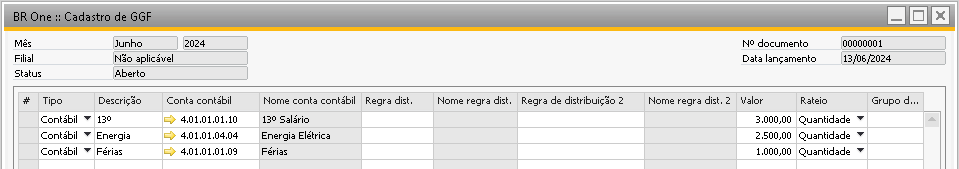
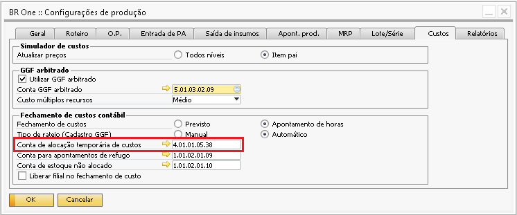
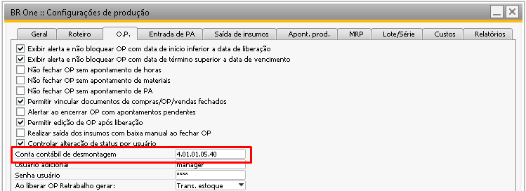
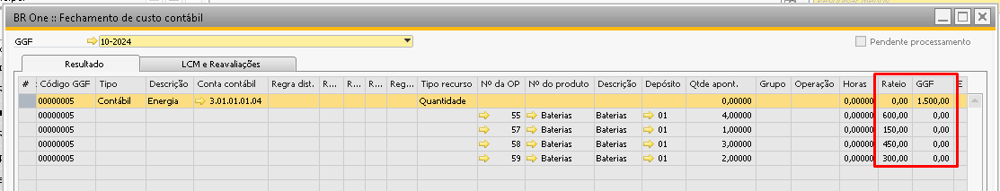
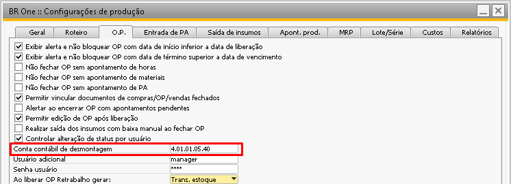
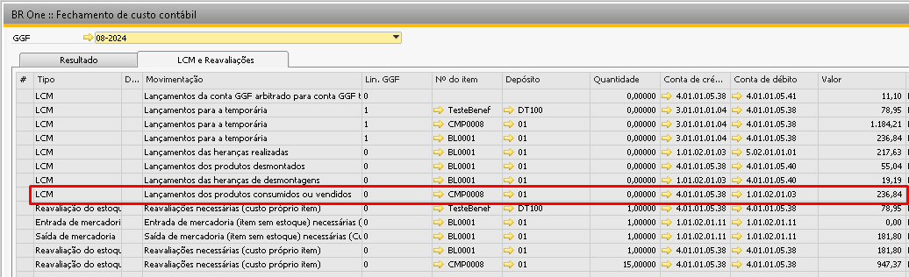
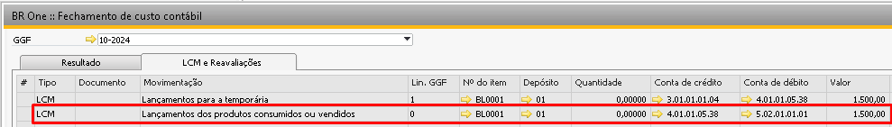

Movimentos do Fechamento de Custo
Nota
Para uma melhor visualização das imagens, abra-as em outra guia.
Na aba “LCM e Reavaliações” da tela de Fechamento de Custo do BR One, é demonstrado os movimentos que ocorreram no período de fechamento, segue abaixo todas as movimentções existentes que podem ocorrer:
Lançamentos da conta GGF antecipado para conta GGF transferência temporária
Lançamentos para a temporária
Lançamentos dos produtos desmontados
Lançamentos ajuste desmontagem
Lançamentos dos produtos consumidos ou vendidos
Reavaliações necessárias (custo próprio item)
Lançamentos das heranças realizadas
Reavaliações necessárias (Herança)
Lançamentos das heranças de desmontagens
Lançamentos da conta GGF antecipado para conta GGF transferência temporária
Este movimento ocorre quando a configuração ‘Utilizar GGF antecipado’ está selecionada, desta forma sempre que for realizada uma entrada de PA será gerado um lançamento contábil na ‘Conta de GGF antecipado’ e desta forma ao simular o fechamento de custo contábil, o sistema irá somar todos os lançamentos que foram realizados nesta conta dentro do mês do fechamento para ajustar o valor rateado com o valor do que foi antecipado durante as entradas de produto acabado:
Conta de Crédito: “Conta de alocação temporária”
Conta de Débito: “Conta GGF antecipado”
{kind=link}
{kind=link}
Lançamentos para a temporária
Este movimento é o primeiro passo do fechamento de custos que tem como objetivo identificar os valores que foram inseridos na tela de Cadastro de GGF e direcionar para uma conta temporária para posteriormente ser distribuídos entre os itens e acordo com suas movimentações no mês. O cadastro do GGF é realizado de acordo com a conta contábil e seu valor para rateio, o exemplo abaixo é cadastrado um total de 6.500 em GGF:
{kind=link}
No fechamento de custo esses valores são rateados entre os itens que possuírem ordem de produção de acordo com o tipo de rateio da base, assim são enviados para uma conta temporária na tela de fechamento de custos:
Conta de Crédito: “Conta de GGF”
Conta de Débito: “Conta de alocação temporária “
{kind=link}
A definição desta conta de alocação temporária ocorre na tela de Configurações de produção > aba Custos.
{kind=link}
Lançamento dos produtos desmontados
Esse movimento ocorre sempre que Ordens de produção padrão listado no rateio do GGF tem em suas transações saída de mercadoria do PA que está vinculada a uma OP de desmontagem, ou seja, foi consumido dentro de uma OP de desmontagem. Isso ocorre apenas para cenários onde a empresa produz o mesmo item e consome ele dentro da OP de desmontagem.
Conta de Crédito: “Conta de alocação temporária”
Conta de Débito: “Conta de desmontagem”
{kind=link}
A conta contábil de desmontagem pode ser localizada em Configurações de produção > aba O.P.
{kind=link}
Lançamentos ajuste desmontagem
Esse movimento ocorre sempre que há Ordem de produção do tipo Desmontagem considerada no rateio do GGF. Assim o valor calculado para essas OPs será somado e gerado um LCM de ajuste para desmontagem.
Conta de Crédito: “Conta de alocação temporária”
Conta de Débito: “Conta de desmontagem”
No print abaixo todas as OPs são de desmontagem. É possível notar que todo valor rateado para as OPs é somado posteriormente e apresentado na linha de ‘Lançamentos ajuste desmontagem’:
{kind=link}
{kind=link}
A definição desta conta contábil de desmontagem ocorre na tela de Configurações de produção > aba OP.
{kind=link}
Lançamentos dos produtos consumidos ou vendidos
Consumidos:
Esse movimento ocorre sempre que Ordens de produção listado no rateio do GGF tem em suas transações Saídas do PA que estão vinculadas com OP padrão, ou seja, foi consumido a baixa do item do estoque dentro de uma Ordem de produção.
Dessa maneira o sistema realiza um LCM na conta de WIP (Material em Processo):
Conta de Crédito: “Conta de alocação temporária”
Conta de Débito: “Conta de material em processo”
Lembrando que a conta de material em processo é recuperada do cadastro do item, podendo ser: Por deposito, nível de item, grupo de itens, ou se a empresa usar determinação avançada na Determinação de conta do razão.
{kind=link}
Vendidos:
Esse movimento ocorre sempre que Ordens de produção listado no rateio do GGF tem em suas transações Saídas do PA que não estão vinculadas com OP, ou seja, foi dado baixa do item do estoque através de uma venda ou ajuste de inventario.
Dessa maneira o sistema realiza um LCM na conta de CPV (Custo de produtos vendidos):
Conta de Crédito: “Conta de alocação temporária”
Conta de Débito: “Conta de produto vendido”
Lembrando que a conta de Custo de produtos vendidos é recuperada do cadastro do item, podendo ser: Por deposito, nível de item, grupo de itens, ou se a empresa usar determinação avançada na Determinação de conta do razão.
{kind=link}
Reavaliações necessárias (custo próprio item)
Esse movimento ocorre sempre que Ordens de produção listadas no rateio do GGF tem quantidade acumulada no último dia do mês e no dia atual do processo, ou seja, foi realizado o fechamento e possuía 30 quantidades acumulado e no dia atual da simulação/processamento existe quantidade acumulada. Dessa maneira o sistema realiza a Reavaliação de estoque na conta de Estoque.
Na exibição as contas de crédito e débito são a mesmas, pois a reavaliação é feita de acordo com o valor passado, se for positivo o próprio SAP debita em estoque, se for negativo credita em estoque, sempre contra a conta de alocação temporária:
Conta de Crédito: “Conta de alocação temporária”
Conta de Débito: “Conta de alocação temporária”
{kind=link}
Lançamentos das heranças realizadas
Este movimento ocorre sempre que houver entradas de PA onde as OPs foram consumidas em outras Ordens de Produção, isso é, item semiacabado. O custo para cada semiacabado precisa ser identificado e agregado ao item pai, isso é chamado de herança pois diz-se que pai “herda” os custos de cada nível da OP.
Então o processo do fechamento ocorre da seguinte forma: O sistema calcula e agrega os custos desde o nível mais baixo da OP agregando na conta WIP (Material em processo), estes custos devem ser agregados ao primeiro nível, que é o item pai.
Após distribuir os custos dos Semiacabados e agregados a conta WIP, é identificado o PA pai daquele item e realiza a distribuição ao custo do PA, no caso se identificar que o PA teve saída, é gerado esses lançamentos na conta de produtos vendidos:
Conta de Crédito: “Conta de material em processo”
Conta de Débito: “Conta de produto vendido”
{kind=link}
Reavaliações necessárias (Herança)
Este movimento ocorre sempre que houver entradas de PA onde as OPs foram consumidas em outras Ordens de Produção, isso é, item semiacabado. O custo para cada semiacabado precisa ser identificado e agregado ao item pai, isso é chamado de herança pois diz-se que pai “herda” os custos de cada nível da OP.
Então o processo do fechamento ocorre da seguinte forma: O sistema calcula e agrega os custos desde o nível mais baixo da OP agregando na conta WIP (Material em processo), estes custos devem ser agregados ao primeiro nível, que é o item pai.
Após distribuir os custos dos Semiacabados e agregados a conta WIP, é identificado o PA pai daquele item e realiza a distribuição ao custo do PA, no caso se identificar que o PA possui quantidade em estoque é gerado uma reavaliação de estoque.
Na exibição as contas de crédito e débito são a mesmas, pois a reavaliação é feita de acordo com o valor passado, nesse caso o valor é positivo o próprio SAP debita em estoque:
Conta de Crédito: “Conta de material em processo”
Conta de Débito: “Conta de material em processo”
{kind=link}
Lançamentos das heranças de desmontagens
Esse movimento ocorre sempre que nas ordens de produção identificadas para o rateio possuir itens que são semiacabados em OPs de desmontagem e que houveram entrada de componentes:
Conta de Crédito: “Conta de material em processo”
Conta de Débito: “Conta de desmontagem”
{kind=link}